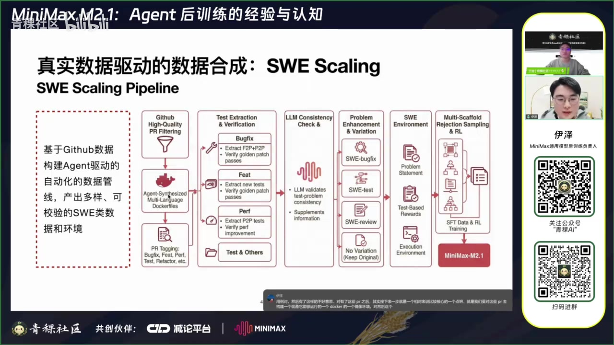
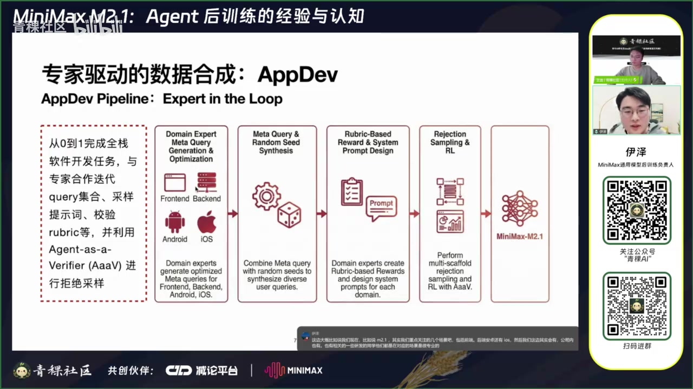
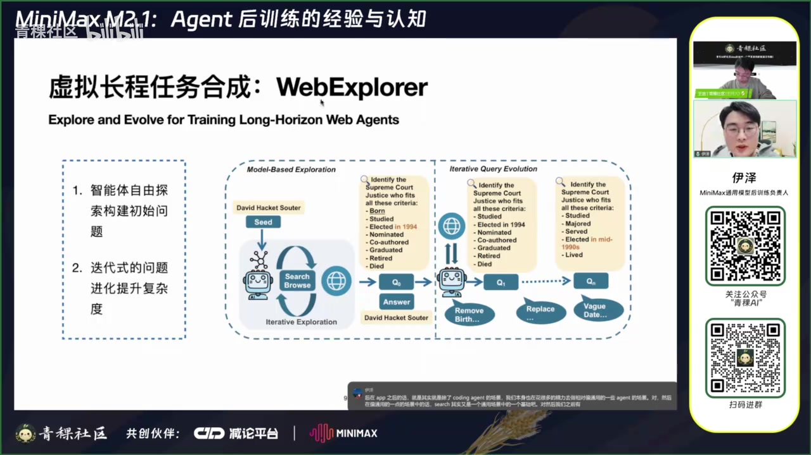
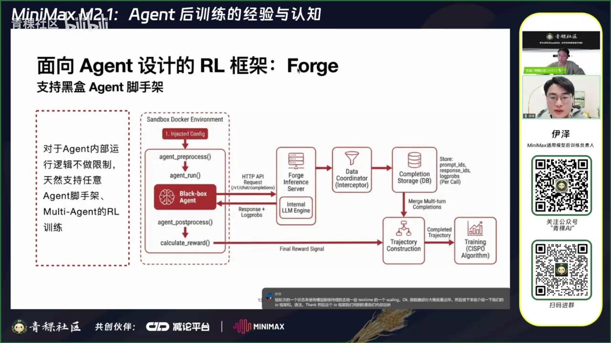
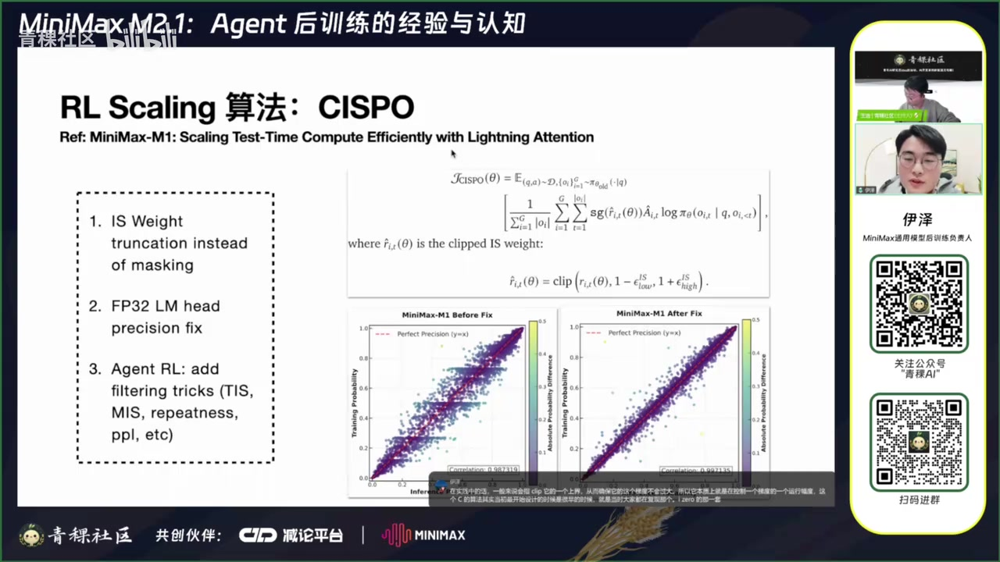
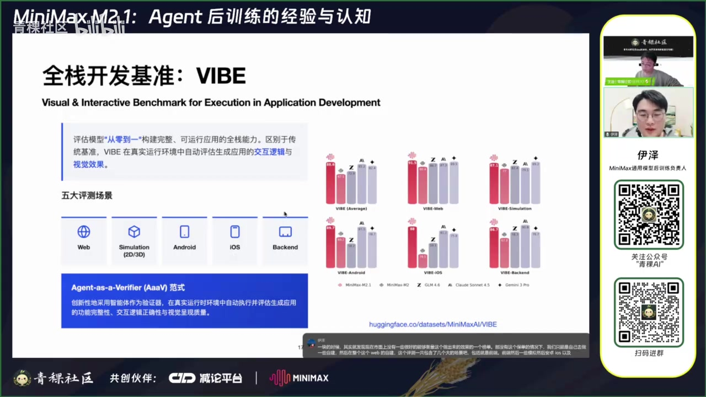
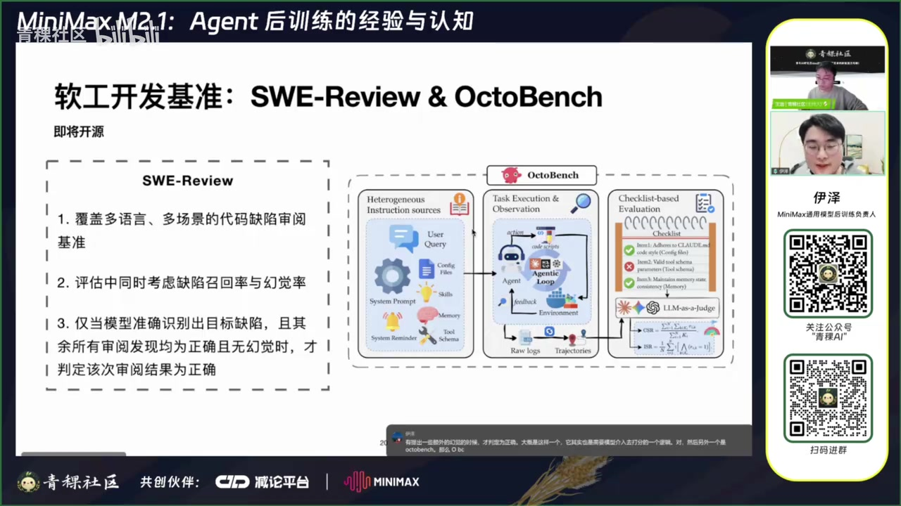

原视频讲述 · 第 1 部分
00:01直播间的观众朋友们大家好。对，然后也是祝大家新年快乐吧。对，刚刚过完假回来，然后今天很高兴受邀来青稞社区给大家做一个技术分享。对然后主题的话是关于 mini max m2.1的 agent 的后训练的技术。对然后我先简单介绍下 mini max 2.1吧。对，M2.1是我们在上一代就是 M2的基础之上，进一步的去做了一些后训练优化。然后在上个月开源的一个最新的我们的一个主力模型。对它是一个大概是230B 的总参，然后10B 左右激活的一个 M E 对然后 M2.1这个模型它本身的特色其实就是在整个 A 件的场景会有比较好的可用性。
00:49包括在一个就是其实激活很小的一个情况下，达到了一个非常好的一个效果，包括他的速度也能够很快。对然后那我就正式开始吧。对今天讲分享的一些技术内容主要包括这些，然后分成几个方面吧。一方面是数据，数据其实是最核心的部分，然后会再简单介绍一下阿游的一些框架和算法。再就是在 M 点1时代，我们就是我们开源的时候同步推出的一些我们自建的一些评测 mark。然后最后也会有一个 Q A 的环节，就是大家听的时候如果有任何问题可以随时提问吧。然后主持人老师他会收集一下，最后会再提到我这边来，最后我会就尽量去回答一下对。
01:35Ok 那就先说数据合成。对数据数据合成这边大概分为几个部分吧。对，就前面两个其实是关于 coding 的场景的，然后后面这个是偏通用的一个搜索场景的对那首先其实是一个比较核心的东西吧，其实就是整个软件工程场景下的一个数据的 scaling。对对然后这边其实会有一个非常核心的点吧，其实就是要利用好 get up 去这样一个非常庞大而且非常结构化的一个数据的来源。我们去合成各种各样的 verifi 可校验的这种任务啊，有了这样的任务之后呢，我们其实不管是去做拒绝采样构建的数据，还是说去做 R 游，它都会有非常好的一个数据基础。
02:24对，然后这边我可能会就大致介绍一下整体的流程吧。对最原始的首先数据来源就是 get up 的一些 pr 包括 commit。对然后这边其实会去做一些质量的筛选啊，质量筛选当其实会有很多种方法啊，简单一点，比如说你可以去筛选一些就是最终被 mer 的 pr 当然也会有一些其他的规则，比如说它应该是可能带有一些相关的一些测试用例。对，然后有了这样的，对，不好意思，对，有了这些 pr 之后，其实接下来一步就是一个相对来说比较核心的一个点吧。就是我们要对这些 pr 去构建一个就是他能够运行的一个 docker 的一个镜像环境。

03:06对然后这个镜像环境它其实他的构构建本身不是一件非常容易的事情。然后现在的一般的做法的话，其实我们会去通过 A 件的在一些代码的沙盒里面去给他一些工具。然后他能够不断的去 build，然后根据 build 的结果去自我迭代循环，然后去尝试把这个环节构建出来。当理想情况下，这个过程呢是可以把它完全自动化的当现在还没有达到特别理想的状态下。其实就是说你在特定的一些语言，或者说一些特定的一些库的一些版本中，其实他不一定能够构建的特别好。那这个时候其实也会需要一些有经验的一些专家的知识来帮助去优化整个 agent 的一个执行的流程。
03:48对因为现在流行的其实是一种其实算是一种 skill 的一些注入。对那在这一步之后，其实我们就构建了关于这些 pr 去你去构建了一个可以运行的一个虚拟的 docker 的镜像环境。对然后在这一步之后的话，其实就是对对 pr 本身去做一些 ta 和分流。就比如说 pr 本身它其实是有很多种的数据类型的。包括说比如说 bufi 包, 括说增加一些 feature，比如说做一些性能优化，做一些那个测试用例的构建重构等等。其实这里大概我们之前大概整体我会有个大概小几十种吧。
04:23嗯然后这边做分流的目的是因为其实对于不同种类的这种 pr 或者我们其实在后面利用的时候，他的利用的方法是会不太一样的。对，就举一个最简单的例子，也是比如说是最主流的 bufix 场景，那其实我们是会去抽取他的一些 fail-to-pass 以及 pass-to-pass 的一些测试用例啊，有了这些测试用例之后，我们可以去校验。比如说当一个 golden patch 它是能通过的时候，我们认为这条数据是可以通过的。那我们最后就让模型作为一个 agent 在沙盒里面去去修复这个 bug。
04:58然后我们就用这个 fail-to-pass，包括 pass-to-pass 的一些 test case，去校验他是否真的通过了。对然后这边 pass-to-pass 它主要作用的话是说防止在修复 bug 的过程中，他去引入了一些额外的 bug。对那比如说如果是到一个比如说新增 feat 的场景，那上面的这种做法其实可能就不一定成立。因为比如说如果是在新增 feat 的情况下，他写的一些测试用例实际上是可能会依赖你新增的一些 feature 本身的那些代码脚本里面的一些比如说函数的签名。
05:30那这种情况下他的本身在构建那一步他可能就失败了。那他其实不一定会存在这 PaaS 或者说 pass-to-pass 的这种测试用例。那这这种场景下，它其实可能就是它的这个测试用例的抽取逻辑就会不一样。比如说他需要去专注于去抽取一些新的测试用例。新增的测试用例就是在这个 pr 的过程中增加了一些一些测试点。对然后我们同样需要去校验，比如说原始的 golden patch 至少，在这些新增的测试点上它是能够通过的。对再然后比如说如果是在一个 performance，就是代码性能的优化上，那其实并不存在说是去修一个 bug。
06:05所以说他其实可能也不存在有这种 fail-to-pass 的一个 test。那它其实这种情况下，你其实就是去抽一些 pass-to-pass test，包括去定位一些他真正做了一些 performance 改进的一些测试点，然后去验证它确实在修复前后，它是会有一个比较稳定并且显著的一个性能差异的。对那这这里反正是举了一一些比较基础的一些例子吧，然后其实其他不同种类的 P R 也会有其他的不同的做法。对然后在这一步之后的话，就是到这个就第三列这个就是模型对它去做一个校验。
06:41对这个校验的目的的话，其实是因为就是比如说就算是在基础的 bufix 场景下，我们其实在做的时候也会发现，就是他的测试用例里面，因为我们用的其实就是最原始的 get up 的 P R 数据嘛，他有的其实也没有说那么规范，或者说他的测试用例也不一定跟他的原始描述的那个 pr 的艺术是特别就是很准确的涵盖的。那这种情况下其实会出现就是说你其实按照正常的，你按照这个医学的描述或者说问题描述，你其实永远都做不出来啊，或者说永远解不了这个疤。那这种情况下，所以会通过模型去对原始的测试用例和问题去做一个校验，来确保它是一致的。
07:21对然后如果说他确实有一些关键信息的缺失的话，我们其实可以通过模型去啊在原始的问题描述里面去做一些补充，来保证它是一个小就是 self content 的一个自包含的一个完整的一个问题对。然后在这一步之后的话，其实对于同样的一个皮 R 或者艺术。其实我们是可以有很多种不同的利用方式的对就比如说比如说你可以给他增加一些额外的一些 bug，或者说把一些多个相邻的一些 commit 或者说 pr 的点给他合并到一起。那这样的话会去给他增加一些难度。对，类似于那种 switwissm 的那种做法。
08:00对然后还有比如说我们可以给他造一些就是其实就是 box fi 场景，它跟这个 test 的场景，它其实是可以完全等价的转换过来的。对，就比如说原先 bufi 就是说我在修复 apply 这个 golden patch 之前，它其实是应该会挂掉。然后我还 apply 这个 golden patch 之后，他应该能够通过那些测试用例。那如果我是把它改造成一个写测试用例的一个任务，那他这个其实就会反转过来，就变成说我要写一个测试用例，使得他在 apply golden patch 之前原先的代码库的状态，他这个会 fail 掉。
08:33然后新修复完之后，他其实是能够通过这些测试用例。那这样的话其实就是对应到模型要有一个比较强的写测试用例的一个能力。对然后这个任务本身也是完全就是跟原先的这个 bufix 是同源的，而且是对再然后比如说也可以做一些就是代码审阅类的任务。其实这个代码审阅类的任务会跟前面这些还会稍对有一些不一样。就比如说他这个地方其实是可以从更原始的，就是比如说这个 get up 的 filter ing 这个地方直接连一条线连到这个 sweet 的 review 这边来的。原因是说就是我们其实本质上是可以构建一些代码审阅的任务，就是说我们并不给他一个完全可以运行的一个环境。
09:14就比如说我自己，比如说我们平时自己在本地电脑上，我去开发一些项目。那我本地电脑上其实也不一定能够完整的去就是去去运行一些测试，包括把整个代码库给跑起来。那这种情况下，模型本身它是需要有一些就是他去看这个代码库，包括去静态的去分析这些文件之间的依赖关系，然后最后去提出一些问题。对那这种情况下，所以他其实是不依赖整个环境构建的，他可以做到一个更好的一个多样性。对然后他本身的工作原理的话其实也是类似的。其实就是说你 pr 本身它是会包含一些比如说他修改的一些文件。
09:47那么在修改前他可能是有 bug 的，修改之后他其实是修复了的。那么你其实可以拿这些文件去给模型去做 review。然后如果他能 review 出来，就是原先至少就是在那个 pr 里面已经包含了这些 bug。然后你用一个在 L 去做一个校验它的一个一致性，那其实本身也可以作为一个近似可校验的一个任务。对对，然后其他的也可以保持就是原先的这个不变。对这边总的来说的话，其实就是说整体是可以有很多问题的变形和增强的方式的对。再然后最后我们就会得到一个 s 类的一个数据，以及它的一个运行环境吧。
10:25就包括原始的一个问题的描述，包括一些基于测试用例的完全 verifi 的一些 reward，再就是包含他的一个 docker 的一个运行环境。对然后有了这个数据之后，最后其实用法的话会包括其实就是个 S 一个是 I 那 S 的话其实需要的是通过我们这边会有一个设计，就是通过多脚手架去做拒绝采样，来保证来优化模型的一个泛化吧。对然后另外一个就是二这边多脚手架的话，原因是现在其实很多脚手架它其实里面是有很复杂的上下文管理的一个逻辑的对就假如说我们只是在一个相对简单的，比如说 react 的一个 simple agent 的框架里面去做数据。
11:10那么模型对于他在其他脚手架上的很多行为，他其实是没有办法防滑。对这个点比如说因为比如说在 cloud code 里面，它会有很多什么 system reminder，甚至会有很多什么 skill cloud md 类似于这种东西。那模型如果从来没有见到过那这个东西相当于是人你也没有办法完全想象一个你从来没有见到过的东西。对于模所以对于模型来说其实也是一样的，就是他没有办法泛化到一个整个训练数据完全没有涉及到的空间。所以我们这边会有一套比较完善的工程基建，来保证能够在多脚手架的环境中对模型去做拒绝采样，来生成一个更好的轨迹对。
11:48Ok 所以整个大概 sweet 的一个核心思想的话，其实总结一下就是基于原始的 get up 数据去构建一个基于 agent 的驱动的一个自动化的数据管线。然后能够产产出多样的可校验的类的数据和环节。然后这个地方其实本身是其实还挺需要一些创造力的。就比如说这个地方，比如说对于各种任务的合成的方法，包括怎么样能够合成一个可校验的任务，其实也是需要发挥一些聪明才智。然后这方面研究其实也很多，包括做这个数据管线，最近有那个什么属于奔曲佳佳那种，其实有一些不断的有一些新的开源工作出来，这个大家感兴趣的话也可以去关注一下。
12:31ok 然后是截止到 M8.1吧，就是我们整个 sweet 的数据的 sc 应该也其实已经做到一个还不错的一个状态。就是覆盖的编程语言超过十种，就是超过了十种主流的编程语言，然后覆盖了各种各样的代码任务的类型，然后也覆盖了各种不一样的编程场景。对最终我们现在可以用到的，比如说 rapper 就是能够直接去跑，或者有的这种 ra 的数量能够大于1万个，然后啊或者数量能够超过14万。对最后也是这个是在几个类的核心榜单上的一些指标。
13:12对这边对比了 M2.1和 M2，其实尤其是在这个就是 Marty sweet mo 灵果这些多语言的场景上，我们因为整个的做了更充分的点，它其实是会有一个比较显著的提升。另外一个点的话就是说在不同的脚手架上去评测，其实能发现模型能保持一个相对来说比较好的一个就是一个性能的一个稳定性对。但这边其实因为不同脚手架，它的它所能达到的上限还是不一样的。就比如说它去设计可能会比较好，那 minent 它本质上是一个纯的这种脚手架，那它其实你通过去写文件，它其实会消耗更多的 context，那它其实最终模型的上限啊会更低，这个倒是符合预期的。
13:57但我们能做的就是说模型本身对于不同的脚手架有一个比较好的适应性。Okay.然后就是第二部分第二部分我们其实是我们整个 coding 方向。我们会把它分成两类，一个是类，一个是就是 app Dev 类的啊，我们这边把 app Dev 的定义成就是从0到1去完成一些偏全站的一个软件开发的一个任务。就之所以要把它跟 sweet 完全的也不是完全吧就是大概的做一个区分去分别做的话，原因是它跟 sweet 类的任务有一个比较本质的不同，就是说因为他是从0到1去完成一个开发任务。
14:37比如说我让你去写一个小游戏对吧？或者说写一个可以交互的一个网页。那这种东西其实它是没有办法预先定义一个或者说一系列固定的测试用例的。那 ssweet 类因为它是基于 get up，它其实本身它的它所行为的这个空间是相对受限的。因为它是一在一个已经比较成熟的一个 rapper 里面去做操作。但是 up 它其实是从0到1去写，那我没有就没有办法去预先限定死这些测试用例。对那如果这种情况下，相当于说它的整个 reward 的链路跟就会完全不一样。然后我们在整个 up 场景的话，其实会用到一些就是我们叫 X 的 loop。
15:17其实会用到很多数据专家的经验来帮助我们去迭代，包括生成一些数据链路。这边大概比如说啊我们现在比如点1，其实我们重点关注的几个场景吧，包括前端、后端安卓还有 iOS 然后我们这边其实会有公司内也有相关的一些研发的同学，他们都是在对应的场景是很专业的。那么这些专业场景的研发同学，他就会作为我们的数据专家来加入进来，帮我们一起去优化 app 的一个数据合成。对就比如说最开始的时候，他可能会去写一些偏 meta query 的东西，这种 mequery 最后会被用来啊，就比如说它是一个前端场景，他可能会限定说他他有一些哪些技术站对吧？

原视频讲述 · 第 2 部分
16:01比如说他具体可可能会写哪些哪些 app。那这种 mequery 里面再结合一些特定场景下的一些 random se 我们就能够合成出原始的，相对来说比较多样化的一些用户的 query。然后有了这些 query 之后，下一步的话其实就是去做采样。那采样的之前的话，我们其实需要有就是需要构建一些 rubric based 的 reward。那这个 rubric based reward 它本身其实也是比较依赖专家经验的。因为不同的专家他其实对于不同的任务，他其实可能会有不同的可能，他的就是校验标准其实是不一样的。
16:37然后我们整体这边又没有办法通过一个一个完全 reable 的方法来做，所以那只能是通过 rubric 来做。对。然后除了 rubric 之外的话，其实还有一点就是专家其实他是可以注入一些经验在整个做数据的流程中的。就比如说我在写这个网页前端的时候，那比如说我们上一代模型 M2，他其实会有一些比较不好的习惯。比如说写一些就是大家看来比较丑，比如说鞋点渐变色啊，类似这种就是比较固有印象的东西。对那这种东西其实是可以专家有一些鲜艳的 pro 的设计。比如说告诉他应该怎么样去怎个设计前端的页面。
17:14那这样的话如果模型有一个还不错的 system pro 的一个遵循能力，那他其实是能够在这种 pro 的的指导下去采样出更好的一个轨迹的。然后有了这样的轨迹之后，我们其实可以去做一些类似于比如说 problem distilation 的一些方法。就是比如说我们采样的时候，其实可以有这些 system problem，但是在最后训练的时候可以把这 system problem 去掉。那这样的话其实这种这种专家注入的一些 best practice，或者说是一些行为习惯，其实就会变成默认模型的一种默认的行为。
17:46对再然后最后的话其实就是也是类似的吧，其实在多脚手架去做一个拒绝采样以及相关的一个阿 O 然后这边对还有一个点是说，他其实是会利用到一个 agent veri 来做这个最终的 reward 的一个校验。这个原因是他其实很多，比如说在前端场景，你其实你其实就算是给了他一个 rubric，他其实也没有办法特别好的根据你静态的代码来，或者说一个单纯的一个单页的渲染的结果来做这个最终的判断。对那这种情况下其实我们会有一个模型，它会在一个沙盒环境中去把这个你比如说你写了一个前端的项目，他会把它完整的部署起来。
18:28然后他可以在那里面去啊，比如说类似于 play right 这种工具，他可以去打开网页，然后去跟他进行一些交互。那交互完了之后，整个网页的状态就会发生一些变化。然后在整个这个过程中，他去对照这个 rubri 去进行一些打分。对然后这个我们把它叫做就是 agent，这个跟原先就是上一代的 L George 其实会有一些差别。差别的点就在于它需要不断的利用工具去做多的交互，最终才能够去啊进行一个判断。Ok 然后整个 web top 这块的话，其实应该是 up stop 这块。
19:06其实现在开源的11个榜单，其实比较受关注的是这个 hold。然后我们之前也在这个上面也是取得了一个还不错的成绩吧。对，仅次于预商家的这几个模型，然后在开源模型里面是排行第一的。然后关于 up up 我们也有一个自建的一个榜单，就是 web。然后那个榜单我后在后面就是 A 减的评测的那一块会再稍微展开介绍一下嗯。Ok 然后在 app 之后的话，就是其实就是除了 coding 的场景，我们本身也在花很多的精力去做相对偏通用的一些 A 的场景。对然后在偏通用的 A 件的场景中的话，search 取其实又是一个通用场景中的一个基础吧。

19:50对，然后我们之前有也是有一篇就是 web explrer 的一个工作，就是 explore and evolve for training long horizonweb agents 这个工作现在应该是在 archive 上面可以看见，然后也是在投稿中。这个具体的思想呢其实会包含两部分，就是这个方法。第一步是通过一个智智能体自由的探索，去构建一个相对初始的，但是信息很丰富的一个问题。然后第二步就是迭代式的去做一个 query 的一个进化，来提升整体问题的一个复杂度。
20:23对然后关于这个会稍微展开一个例子来帮助大家理解吧。对，这边其实可以看到这边右上角其实对于 web explorer 来说，最开始的一个输入只有一个随机的一个种子。比如说这边就是一个巴西的国家队，对然后模型拿到这个之后，让他去做一些相关的探索。比如说最开始他就去搜巴西国家队的一些信息，然后收到他们可能参加了1950年的世界杯啊，这个1950年世界杯有个有个什么马马拉卡纳一个惨案吧。然后他就去看这个比赛的一个消息，然后比赛的信息里面有这个他的裁判叫 georrader georri 他是在世界杯之后呢，他过了一些年，他到了英格兰的一个俱乐部去当他的一个主席。
21:10然后这家俱乐部他在1976年英格兰的足总杯里面赢了曼联，拿了冠军。然后这场比赛呢当时是啊 bo 比 stro 这个啊这个球员，他在83分钟进了一个支胜球，然后再去调这个 Bobby stro 调研 Bobby strocks 的一些生平的一些资料，然后包括这场比赛的一些信息。对然后最后这样做下来的话，他会把整个搜索链路的这些线索去做一个综合，然后生成一个一个信息比较丰富的，但是比较初始的一个问题就是比如说这边的一个例子，就是一场足球比赛发生在啊这个至今保持了官方人数记录的一个体育抽上。
21:47然后裁判是一个决赛的最年长的裁判，然后26年之后他担任了一个俱乐部的主席，他在足总杯决赛击败了曼联。然后有一些主总杯这个比赛的一些信息，包括这个球员的信息。最后问这个支胜球是在第几分钟打进的，那么这个信息其实这个问题他本身包含的信息量比较大，但是他其实是有很多很明显的就是搜索的入口的。那如果是直接拿这个问题去给模型，他其实一上来他就可以找到很多可以用的 query 的一些入口。然后他其实可能就能直接搜到一些相关的信息，所以这边有一些进化的策略，就包括移除，然后模糊化以及替换。
22:26就比如说对比下来，比如说在这边具体的这场比赛的信息，它可能会把它做一个模糊化，它是一个赛制独特，然后没有淘汰赛决赛就结束的一个国际足联的世界杯。然后一个之前说他是在足总杯击败了曼联，那这个其实是一个非常显著的信就是明显的可以搜的信息。然后他把这个就改造成了说他带领的是一家乙级联赛的俱乐部，战胜了一家甲级联赛豪门。那这种情况下，其实这种可能性就会排列组合就会有很多了。那他其实相对来说就不是很好搜。然后再就是关于这个比赛的球员的信息，他是在原先有比如说他是44岁去世，那这个信息其实也很明显，可能是可以在一些微 K 里面搜到的那把这个信息就给移除掉，然后换成了一些相对模糊的信息。
23:10然后最后问啊这个进球发生在第几分钟？那这样一来，最终的进化完的这个 query 相比于啊这个初始问题，它其实是要复杂的多的。然后他其实一上来也是不太可能有明显的一些搜索入口给他去做一些直接搜索到相关联的信息。他只能啊一步一步的去搜，他可能一边猜一边搜，然后再根据新的线索然后再继续搜，类似于这样。对然后这个方法这个是论文里面当时的一个指标吧。其实就是对这种长城任务的合成，其实一个很重要的一个标准就是他在平均解决的一个文次。就比如说最开始他的这个初始问题，他是一个大概7.9轮能够解决。
23:55然后进化完之后，他其实到了一个9.9轮。然后当时同期的也有一些其他的一些很多工作吧。对然后其实相比来说的话，复杂度会从轮次上来看至少是会明显更低的。然后这个策略最终也是啊上线到我们的 M2.1的模型里面。然后最终 M2.1的在 bocom p 上面的这个指标啊，尤其是在带有 context management 的这个上下管理的情况下，它其实已经是也是比较接近 GPT 5.2的一个它的一个指标了。对这边 context management 其实现在是也是 A 件的场景下一个一个比较其实最近几个月已经比较主流的一个做法吧，其实就是在你整个 agent 的评测的过程中，会不断的去进攻它的上下文，来保持它的上下文是一个相对来说比较清晰比较干净。
24:40然后是一个很短轮次的一个状态，来使得模型能够持续的去做一些 test time 的一个。Ok 那数据部分大概就是这样。然后接下来就介绍一下我们的 I 框架和算法。对然后这个 I 框架我们用到的是我们内部自研的一个框架，叫做 forfor 这个框架。是其实也是在整个 minmax m2这一代模型同期去我们重新去开发自研的一套就是 I 的框架。然后因为 mini max m2这一代模型在我们在最开始研发之初，其实就有一个比较确定性的目标。就是说他可能需要在的场景能够希望他做的非常好。

25:28那所以他其实原生的就是在面向 A 件的场景去做了一些很好的设计。对然后这里重点介绍的他的一个 feat 吧, 其实就是说他其实是能够支持任意的 A 的脚手架的一个运行逻辑来做 R O 的对然后比如说这边右边他其实比如说对于一个任意的 A 件的来说，你要把它接入到它其实只需要实现这四种接口。就比如说它的一个最开始的预处理，这个预处理其实就是类似于它的一个初始化，然后它的一个正式的运行，然后它的一个后处理以及它的一个计算的 reward。那这个里面的话其实啊比如说我假如说就是只有一个黑盒的 agent 的，比如说 sccode 这种，它其实只有一个二进制的程序，但是我没有他的源代码，那这个源代码它其实是不需要接入到里面的。
26:17比如说他在 preprocess 的时候，我们就可以通过在代码的沙盒里面，我们 pm 直接 install 这个 cloud code，那它其实就相当于完成了这个初始化。然后在 agent around 的时候呢，我们就直接用它的 agent 的模式做一个 solo 的一个运行。包括当可能需要解除一些那种 permission，就是 skp danpermission 那种。这样的话他其实就能够直接的去在 cloucode 里面去运行它的整个任务执行的一个循环。
26:43然后这个地方当然需要有一个改动点的话，其实就是把它的整个的 base 1L 去做一个替换，替换成一个比如说类似于就是获内部的一个推理引擎的一个服务。那这个推理引擎我们本身现在已经支持了一个是我们内部的一个推理的框架。同时也支持类似让然后这个部分其实也是在为后续的开源去做一些准备吧。对，然后有了这个 base 要有改变之后的话，其实整个他在 agent 的运行循环中，会在他整个就是在整个的 influence server 这一块，会把它的整个日志全部都落盘落下来。
27:21落落下来之后呢，这边会有一个 data data coordin 它其实就是说对于整个落盘的日志去做一些后处理。就比如说在一些比如这种脚架里面其实会有一些 subent，这种 subent 的的轨迹其实是可以视为它整个任务中的一个主要部分的。那你其实是应该进入到后续的一个训练中。然后当然他也比如说包有包括包括一些可能一些无关紧要的，他呢打那种 high 酷模型的一些 faster model 的那些请求。那其实就可以那种轨迹你可以加一些逻辑去把它忽略掉。对然后有了这些每一轮的请求的日志之后，最终去把它合并成一个 agent 的执行的一个 trajectory，我们就可以去做后续的一个模型的训练。
28:03当这边如果是很买意的，直接把这些轨迹你直接拿去练训练，扔到训练里面。因为他它每个日志是单独的嘛，那他其实会有一个比较高的复杂度。因为他其实每一轮都会有一个完整的日志，那其实可能会接近于原方的一个复杂度，所以这个地方还会存在一个对去做一个比较智能的一个前缀的一个合并，从而提升最后的一个训练效率。对所以整个这个框架设计下来的话，其实它相当于是对于 A 减的本身内部的一个运行逻辑做了一个最小化的假设。因为你任何任意一个 A 件的，它只需要实现它自己的初始化，以及它的一个运行的入口，其实就可以了。
28:43那这样所以他天然的可以支持任意的一个 A 的脚手架的一个训练，包括支持很多 multi agent 的这种工作流的一些设计。都是啊非常容易就介入的。对，然后就在之后的话就是我们的 io 算法吧。其实我们截止到冒点一时代吧，我们整个 io 算法其实还是核心其实还是沿用了原先我们在 mini max m1这篇论文中所提出来的 C 的一些算法。对然后其实主要当时在 M1里面有两个提到的比较核心的点吧。一个是本身的一个 important pling 的一个设计，另外一个是当时32的1个精度的一个修复。
29:28对第一部分的话其实就是 C 的这个整个目标函数吧，其实你可以把它理解成就是上面的这一部分，它其实是跟 reinfor 的目标函数是很像的。你可以如果说把这个 important summary 这个 head 去掉，它其实本质上就是一个 reinforce 在 of policy 的场景下做了一个重要性采样修正的一个目标函数。然后它改变的点的话是会对这个重要性采样的权重，这个权重也就这个标量加权的量去做一个 clip。这个 clip 在实践中的话，一般来说会指 P 它的一个上界，从而来确保它的这个梯度不会过大。
30:07所以它本质上就是在控制一个梯度的一个运行幅度。这个 C 的算法其实当初最开始设计的时候是很早的时候，就是当时大家都在复现那个啊 I zero 的那一套东西的时候，就是包括当时自己也有那个 D O 然后我们当时在复现的时候，其实就是提出的这个 C 当时的一个核心的一个观察的话。其实是说在整个 zero 的的运行过程中，我们会发现有一些 token 它其实是一直会被的那个 clip 给他 clip 掉。Clip 掉之后就导致那些 token 永远没有啊没有梯度。

30:42那这些 token 的话最后统计下来其实会发现都是一些类似于 wait 这种转折词。那这种情况下就会导致这个鲜艳的 pu 的这个 clip，导致很多 token 它其实是永远没有办法涌现的那这种情况下，当时就是我它的一个做法，其实就是把整个 clip 的上界的 clip 上给他提高。然后我们当时的想法的话就是说所有的 token 他其实都可以去这个梯度。只是我们需要控制这个梯度的这个这这个 important weight 的一个一个一个加权的系数。这样的话通过减少增加一些 bios 来减少整体的优化的一个方差。
原视频讲述 · 第 3 部分
31:18对然后关于 C 的这个算法，其实我们之前的 C 的核心的贡献的同学，他在那个知乎上面也专门之前发过一篇文章。然后大家如果感兴趣的话可以去搜这个 c sport。他当时有分享一些关于这个算法提出过程中的一些心路历程，就就还写的还蛮好的。对然后第二个部分的话是其实当时也是在我们就是从前期做了一些小模型的实验后，我们迁移到 mini max m1这个更大的模型上面去做。I 当时就发现啊就是整体的 reward 其实就不怎么涨。当时然后就把这个训练的概率以及这个 influence 概率打印出来之后呢，会发现比如说他这个他其实有一些很明显的这个分阶段分阶段的一些横线，包括他的整个相关系数，其实相比于模型来说，它当时会低很多。
32:09对然后这个后来我们就逐层的就是推理的同学他就逐层的去做排查吧。最后发现其实就是在整个预测层的这个 lhard 的一个精度是很关键的。然后把这个精度我们修复到 a p 32之后，他其实整个这个讯推的一致性会得到一个很显著的一个加强，然后最后就能够得到一个比较稳定的训练的提升。Ok 然后再到 M2这一代的话，其实一个主要的变化只是说他到了一个 agent I 的场景，它其实会存在一些多轮的工具调用。那这些工具调用本质上它其实是来自于外界环境的一些一些噪音的一些注入。
32:47它其实会导致整个运行的轨迹可能会更极端，更 of policy，或者说更就是有一些统计值上更异常的一些东西。那在这种情况下，其实会我们也是吸收了一些社区中提出的一些主要的方法吧。包括包括 M I 包括啊基于啊就 m repe 包括 ppo 去做一些轨迹的一些过滤。对但这里反正核心的思想的话，其实就是把一些统计值上啊比较偏异常的一些方位值的一些轨迹给他过滤掉。防止对梯度出现一些比较大的波动，从而影响了整体 R 训练的一个稳定性。然后是啊对，然后这个就是这篇文章。
33:36这个图是引用了 Marta 啊那个论文里面一篇文章啊，就是论文里面的一个图啊，就是这个 of scaling reinforcement learning compufor l 1M 然后当时他他们其实还做了一个比较系统的一个就是实验的一些对比吧。然后其实发现他们的实验也是跟我们比较一致。就是发现整个算法其实他不管是从啊整个收敛的速度以及收敛的上限来说，其实都是表现的很好的。在整个 sc 的过程中，然后这个左边的话这个其实是刻画的是一个的这个 important tran 的一个效果。
34:13右边的刻画的是一个 P32的一个精度的一个修复，带来的一个收益。对这个这篇文章反正整体实验做的还是挺充分的。然后对阿感兴趣的同学同学，我都建议推推荐可以去看一看嘛。Ok 然后到 II 就到这边差不多，然后后面会再分享一下。就是我们在 M2.1时代呢，其实同步也推出了三个评测。然后目前这个 vi 部的这个评测已经是在就他的数据已经在 face 上面是开源的。然后当然当然他的那个基建现在还没有完全 ready，这个我们也是在正在比较紧急的比较紧张的在推这个事情吧。
34:55对，然后第二部分是这个 sweet 的一个 review 的一个根区，还有一个是的一个根。首先是这个 web 部啊，反正这个名字提的挺好的。然后它的核心其实对应的就是我们之前的那个 app devve 的场景。因为我们在做整个做 app devve 这一块的时候，其实就发现现在市面上没有一些很好的能够衡量这个做出来的效果的一个榜单。那没有这个榜单的情况下，我们只能是自己去做一些自建。然后在整个这个外部的自建这个评测一共包含了几个大的场景嘛，包就是前端，然后一些模拟，然后卓 iOS 以及后端。

35:33然后在整个这个评测上，M2.1其实相比于 M2是有一些比较长足的进步的。然后他这里也是之前提到的吧，就是整个教验的逻辑也是一个比较创新的，其实叫 agent verify 的一个方式。利用智能体来作为一个验证器，在真实运行环境中去执行，并且评估整个应用功能的一个完整。具体来说的话，它的 reward 其实会包含几个步骤吧，比如说有偏基础的就是执行层面啊，就是验证这个项目能不能够编译构建成功。那如果说一上来编译就失败了，那他就直接挂掉。然后第二步的话是就是一些交互层。
36:11对那如果是 web 部，它其实就有一些现成的那种工具，包括如果是在安卓或者 iOS 它也会有一些相应的工程的基建。然后让模型能够去跟这个写出来的这个应用的界面去做一些基础的交互。然后他会去根据交互之后的这个整个应用状态的一个变化，来判断整个业务逻辑是否是正常。对然后第三层的话其实就是一个视觉层。当然当视觉层就是这个美学方面的一个评估，我们现在来说应该也不能说做的觉得特别好吧。对，因为这个东西本身还是比较缺体的。然后包括你不同的专家，他其实对于美学，甚至于就是普通人嘛对于美学的这个东西，他的一个评估标准其实也是不太能够完全达成一致的。
36:54那我们这里做的只能是说会去啊关注一些相对来说更基础的。就是所有人大家都能够比较一致认可的一些一些视觉上的一些标准来做一个打分。对，再然后就是前面提到的就是相比于传统的的方法，就是如果只依赖一些静态截图的评估。就是原先这边其实在上一代模型的时候，比如当时 M1的时候，我们其实用的是会比较参考那个阿就腾讯的那个工作。但是但是他们的其实一个问题就是说，他其实就是用了一个静态的一个评估。然后他其实当整个应用场景在做扩张的时候，他其实并不能够很好的反映出应用程序中存在的一些 bug，或者说它的实现上的一些缺陷。
37:43对所以这个地方是就是引入了 agent 来作为一个 verifi 在整个代码沙盒中去做一个相对比较全面的一个评估。然后另外两个就是一个是 sweet 的 review，一个是叫 octo。sweet review 的话其实对应的也是我们前面提到的整个那个管线里面的一个 review 的场景吧。对，然后我们这边做到就是设计了一个比较能够覆盖多语言多场景的一个评测集。然后在整个评测的指标上，我们会同时考虑考虑它的一个召回率以及一个换觉率。然后只有当他能够比较准确的识别出就是原始的这个数据里面的一些 bug，同时他也没有提出一些额外的幻觉的时候，才判定为正确。
38:30大概是这样一个，它其实也是需要模型介入去打分的一个逻辑。对然后另外一个是 out bunch。整个 ocben 这块的话，其实它本质上是一个在 agent 的场景去评估模型的指论遵循能力的一个评测集。对。然后它跟传统的就是原先 reasoning 的那一套就是 if 的榜单的区别在于原先的指令遵循大家主要关注的是 user 的一个 query，当然有一些也会扩到就是 system prompt 的一个遵循。但是在整个现在实际的 agent 的场景中，模型需要遵循的指令其实并很大程度上其实已经不来源于这两部分了。

39:15比如说现在大家实际上去用的时候，你的 query 其实是给的很简单的一个东西。对然后 system problem 可能是会确实会比较复杂的。但是在整个 agent 的运行过程中，其实会有很多其他的东西。比如说 system reminder，比如说一些 cloud md skill 点 M D 包括还有一些指令，它可能会甚至放在工具的一些里面。告诉你说比如说你必须要先用这个工具，再用另外一个工具，你要在什么样的情况下去用这个工具。对那他对于模从模型的视角上来说，他的这个他需要 attention 注意到的这些指令的来源其实是完全发生了变化的。
39:48就原先他只需要关注原始的用户的信息，用户和 system 的 message。但是现在他的这些指令，他其实会分布在啊整个运行轨迹中，包括 tour 的 result，包括 tour 的那个 scheema。对所以就是 auto 也是在我们做的就是在优化整个 agent 的场景的指令遵循的这个过程中啊，就是同步去自研的一个榜单。对当整体的运行逻辑其实也倒也不复杂。其实最终最终来说其实还是一个对于每个测试用例去做一个 check list，然后去进行一个 rubric base 的一个打分。
40:26然后最后是这个指标吧。对，就是 M2.1相比 M2，因为我们在这方面做了一些优化，所以其实整体提升还是比较显著的。就包括的 review，包括这个的这个指令遵的效果，其实都是跟 cloud 4.5差不多吧。当然这个场景其实 o p 4.5确实还是非常的强。Ok 然后那主要的技术分享的部分就大概到这里。然后后然后这个地方是打一个小的广告吧。就是我们现在其实公司在包括社招、校招、实习，其实都是在持续做大量的一些招聘的。然后我们整个算法团队的话其实是一个比较扁平化，然后大家都比较有爱的一群小伙伴。
41:14大家其实对于技术都是非常有激情有热情，然后也不内卷，然后是团队协作的很好，去真的希望能够去做一些比较有价值的事情，然后也希望能够有一些志同道合的朋友能够加入进来啊。对，然后可以扫这个码去看啊，去投递相关的岗位。当除了算法之外的话，其实啊就是比如说我们前面提到在那个 up 场景，比如说我们也会需要一些其他的整个大的研发场景的一些数据专家啊，所以当然本身我们的研发岗位也是在持续招人。所以说就是如果是对大模型啊感兴趣的一些研发的工程的一些同学，其实也是非常欢迎。
41:59对那然后我这边的分享的主要内容就大概到这里。好的，感谢一泽老师的一个精彩分享。直播间的朋友朋友们如果觉得刚才内容干货满满的话，可以在公屏上扣个666好吧。然后接下来的话咱们进入到 A A 环节，然后的话评论区的问题已经挺多了，然后的话依泽老师这边可以筛选一下好吧？好的，我看一下啊，这边有一些问题啊挺多的。Base 模型完整后训练到 instruct 模型数据换笔怎么确定？Ok 就是不要坦率的说，我们现在其实整个在数数据混合的时候，其实不会在就是提前特别鲜艳的去拍定一些数据的占比。
42:49然后我们其实是在各个数据方向下，他自己去做一些 sk 的实验。就包括说比如说他这个方向在整个扩数据的过程中，他的性能到多少的时候会出现饱和。那如果它已经到了一定的数量啊，出现饱和了之后它就不增加。那最后正常的在合板的时候，它其实用的就是这么多数据。那所以我们最后数据的整个混合的占比，其实是会有大家就是不同数据方向的同学的一个 sc 的一个结论来，最终导出这个合板的一个数据占比的。然。后如何确保 sweet test 阶段 l 生成的测试用例是正确合乎规格的？
43:34Ok 这个其实就是在那个 s 管线里面有提到其实。对于一个特定的 pr 来说，它其实是包含了那个就是在修复之前的一个 rap 的状态，以及修复之后的 ra 的状态，以及他的测试用例的一些更新。那其实我们在如果是把它啊变形成了一个 sweet test 的一个任务，那你其实可以让它去同时在 ra 在修复前，在就是 apply 这个的 page 之前去运行，以及 apply 这个的 page 之后去运行。那如果说他在 apply den page 之前它是会 fa 掉, 然后在 apply den 之后它就能通过，那就说明你这个写的测试用例，它是能够比较正常的检测出原始代码中的 bug。
44:17并且它也能够在 bug 正确修复之后，能够让它顺利的运行。那这样就是一个正确的合乎规格的测试用例了。大家看一眼。有 multi agent agentic 入门项目推荐。对，就我想猫 agent 其实现在就是 coding agent 里面有很多开源的做的很好的项目啊，其实大家都可以去关注。就比如说最近我看好像是那个 open code 还挺火的。对，我我们最我们公司最近也在开始关注他这个项目。对，这个其实他是完全开源的，你其实可以去关注一下。然后那个 coding agent，其实啊 coding 就是啊 agent ag 说错了。
45:07对，agent 有什么入门项目？Ag 其实一个是主流的，其实现在 v 的这个框架其实他用的比较多，包括那个 slime。然后其实有一个那个微软的叫 agent lightning，他那个框架跟我们整个 for 的设计思路其实还是挺像的。他其实也是会支持一些偏黑盒的 agent 的一些训练。所以那个项目其实也可以关注一下。St 的 rejection sampling 有哪些判断标准？Ok 就是 srejection sampling 其实其实就取决于具体的任务吧。
45:45对，就比如说如果是完全是 verify 的任务，那其实他判断的主要标准就是他的 verify 的校验有没有通过。就比如说是传统的 reasoning 的任务，像那个数学题，然后一些推理题，包括那些算法题这种它其实都是完全 verifi 的.包括 agent 的场景的话，那就是像 s 包括 brocom 他这种都是结果是可以直接去做一些规则校验。对当然在这个除了规则校验的基础之上，你也可以再额外去加一些11M 去判断一些他整个轨迹的一些质量。比如说他有没有比较错的比较多的一些工具调用的失败，那这你可以认为是个低质量就把它给扔掉。
原视频讲述 · 第 4 部分
46:25类似于这种就是整体来说，他其实就是数据构建的一个 reward 的一个设计吧。Agent 的 scaling 是什么意思？这个我不知道是不是，应该是指的是那个 sweet sweet 的场景下吧啊如果是 sweet 的场景下，我们指的就是整个 sweet 数据管线的一个 sc 能, 够让我们获得更多的可以运行的 sweet 的环境，包括可校验的 reward。这个是指它的一个数据的一个对。然后 I 的的话其实就是指它模型能够在更大的算力下持续去增长它的性能，能够平稳的去训练哦，不要崩溃，类似这样。
47:14这里中文脚手架的意思是什么？对，脚手架其实我说的我整个分享过程中提到的脚手架，其实就是指现在的一些 coding agent，或者你也可以理解成它就是一个 agent 的运行的一个循环的逻辑是什么。对那比如说最简单的脚手架其实就是 react 这种框架，就是调用工具调用工具，然后一直到某一次不调用工具就结束了。那这个是一个最简单的生活 agent 的一个运行循环。然后现在很多像 cloud code、dex line、small code 类似这种，它其实会注入很多相对更复杂的。
47:51包括上下文的管理，包括一些 memory 的管理，包括一些就是工具的调用的一些管理，还有一些就是规则，就是额外的一些规则。General general 方形库场景的环境合成是怎么做的？对，其实整个 general 这个问题很好，就是因为刚刚提到的在 general 方 general 场景我只提到了这个 web explorer。那其实 web explorer 它它这个思路其实总的来说也是可以再把它更泛化一些的。其实包括现在其实学术界也有一些，比如说你可以基 random work 去采样出一些轨迹，然后再于这些轨迹去它的一个 translation，它的些 query。
48:37然后那在这个基础之上，如果我们借鉴 web explorer 的思想，你其实也可以对他这个最终的轨迹的一些目标，比如说去增加一些 evolve 来增加它的难度。对然后这个东西其实我们最近还有一篇论文也在在撰写中吧，这个写完之后之后也会开源出来。嗯。请问训练时的沙箱环境是如何设计的？考虑到训练时的高负载并发场景，且需要不同的代码环境，ok 就我们整个沙箱环境应该还是基于 do 的, 然后在一个 K 8S 的集群上面去运行。
49:25对然后我们现在整体的沙乡的并发，其实是能够最大的应该能够到一个10万的一个10万左右的一个级别。这个并发指的是它同时运行的数量，但它同时启动的数量会比这个小。题目模糊画质后，如何确保答案的唯一性或者确保答案的正确性？Ok 这个题的应该是那个 web explorer 的那个工作。对这个首先他是因为他是在整个在给模型看了完整的一个轨迹，包括所有的信息的情况下，他去做这个对应的模糊化的。所以说他在整个构建的时候会有一些 prompt 上面的一些设计，让他要去确保这个答案是不变的，并且是唯一的，这个是一部分。
50:14另外一个部分的话就是说确实你你即使是做了这些 problem 的设计之后，他也没有办法确保说你一定就不会改错。但是这样的话，我们其实你本身也是通过拒绝采样，他无非就是说会浪费一些绝材量算力。那我们在阿尔的时候，其实会通过一些前期拒绝采样的一些过程。来确保你进阿额的数据至少它是能够通过的对这样的话相当于就是提前去筛选掉了一些有可能是答案是不可解的一些题目。请问 agent as a veri 场景的交互人次多效率低下的问题是如何解决的？然后每个外部开发场景大约需要多少人交互？
51:02这个其实不同场景下会区别比较大，也取决于那个工具本身设计的好不好。对然后这个交互轮次多，效率低下，其实这个确实没有什么特别好的解决方案。对其实主要是因为现在整体大家做 computer use 的这种模型的能力还没有到特别强。如果说大家就是 computer use 子本身能力强的情况下，他其实可能更好的去做一些工具的并发调用。它的交互轮次其实就可能会得到一些提升啊，效率上会得到一些提升。Context management 怎么做？主要是 deal to output，还是 deal reasoning？
51:42Ok 就是如果这个则应该是指的那个 boss comp 那个评测的上下文管理吧。对，然后这个具体做法在那个就是我们那个 M2.1的 huface 的那个评测的那部分，confifigure 里面有写，然后你感兴趣可以再去看一下。对，他主他应该会把那个 to output，包括 reason 其实都会做一些清理。R 数据里应该比 sft 阶段的数据更难也更少，这样的数据也是合成的吗？难度是？如何评价 O。然后首先 R 我们整体上 R 跟 S 的数据还是比较同源的，所以说它其实大部分数据也是合成的。
52:25当然有一些自然数据啊，就是比如说啊非的场景，也有那种 reason，比如就数学题。那这种数据它它其实也不需要合成，对然后难度是如何评价的呢？难度它其实比较自然的一个做法就是在 S 之后，你可以把 R 的难的数据全部去打一遍它的 PaaS rate。那这样的话就是按照 PaaS rate 其实就能够去评价数据的一个难度，而且它是一个比较 policy 的一个评价。Cloud code 训练前缀合并会出现讯推不一致的问题吧？这个应该不会出现讯不一致的问题。因为我们落盘的日志就是原始的黑河 A 件黑盒 A 件的框架，它请求到的那个就是因为我们是在那个推理的 server 那一端去落日志的，所以我们能确保他一定就是他当时推的一个状态。
53:15然后做前缀合并，我们是做一个完全严格的前缀合并，就是我们并不是说他只要是属于第一个 query 是一样的，我们就把它合并了。如果是这样的话，那确实是会有讯退不一致的对，因为他其实有的时候其实会可能会把中间的一些什么啊，比如说工具的一些结果，他到了一定轮次时候可以可以给它清除掉。那这种情况下，你如果是直接去做前缀合并，那是会出现均队不一致的对。你们做的的能力到深领域有多大的迁移性？对，然后看了你们那个维他动力的机器狗视频，A 经几个真的能作为大脑吧？对，其实就是那个是那个维他动力的那个机器狗，那个确实还蛮有意思的。
53:59其实那个就是他那个场景我们绝对是完全没有训练过的那既然我们只是训了一些相对偏偏通用的一些工具调用，他能够泛化到对应的一些巨深聚深的实，就是相当于是真实物理场景，那么我们认为它其实还是能有一个不错的泛化的。当然现在的模型它其实你说它是否能完全作为大脑，它还是存在一些局限性。比如说它这个纯文本的模型，它的一个多模的理解还是会存在，需要有一些提升才能真正的去做一个更好的一个指挥的。为什么不选择 G S O 或者 po 呢？对于 M A 的适配很好嘛。如果是换了算法之后，要不要重构整体的架构？
54:42Ok 然后兼 O 也是一个比较同期的工作吧，然后加 po 的话是相对更早一点啊。然后不用加 po 也是之前有提到，就是我们最开始在复现那个 I 的时候，其实用的就是加 po 但是其实会发现他其实是现不出来的，因为他的那个 O 的 clip 会导致一些 token 就梯度会消失。对，然后我的话这个其实算是一些偏同期的工作，然后这个你可以去针针对特定场景去去做一些选择吧。然后在刚刚刚刚提到就是他那边论文里面应该也做了一些就是不同的方面的一些比较，对那篇论文也可以再看看。
55:20然后 O 对于一的适配很好嘛，就是我们目前观察下来就是这个层面的算法对于一还是 den 模型来说差别并不大。然后是不是换了 I 算法之后要重构整体的架构呢？这个按照我们目前的理解应该是不需要的。对，就是它跟整个模型的架构的关联不大。当然说当然就是 moe 本身它跟电模型的 R 它可能确实会存在一些差异。就比如说那种因为它的 ro 的一个引入嘛，最近好像也有一些就是比如说那种 R 3那种就是固定它的 ro 的路由的这种算法去增强 M1的稳定性。对但是它本身对于更上层的，比如说 C 这种啊，去做一些 bios 跟 straight off 的这些算法来说，它其实没有一个很本质的区别。
56:09Rubric based rewards 更趋向于按维度打分，还是具体定义某些维度是否完成。Ok 这个其实其实不同的方法都有尝试过呀。就是从模型最终的打分的稳定性上来说的话，其实你还是去定义一些他能够明确判断的，比如说 force 的这种会相对来说会更好一些。下一代模型有计划继续扩大模型参数吗？对，这个有可能吧。对，这个还是在我们的整个规划中。请问 I 训练一的时候有没有用的路路由的 replay 技术？
56:52Ok 对这这个技术我们也是有关注的，但是目前来说我们暂时没有用的，因为还没有出现说因为这个没有用 replay 导致他的模型的一个就是崩溃解决不了的一个现象。对当然这个 replay 本身从原理上来说他肯定是没问题的，他的主要的只是说有一个计算效率的一个 off。Rubric 是怎么生成的？人标的嘛？对，就是 rubric 主要还是得靠人标啊，这个地方还是需要有一些专家支持的注入的。I 训练的时候用的 reward 有什么建议？其实 i 训练的 reward，其实核心还是确保他不要被 act。
57:39对，其实就是最近尤其是在那个场景，大家有发现就是最近其实更早的时候就有工作提出来了，然后最近好像又有一些模型在踩坑，就是说他其实他的 reward 是被 hack 的，就是他在做整个任务的时候，模型直接去看了，那他的那个 commit 的信息其实在整个插口里面没有被删掉。然后在模型他在整个 drop 中探索的时候，就发现了那些未来的一些 commit 信息。然后模型就直接根据这个信息，就相当于他知道标准答案了，然后就直接 hack 了。对所以我理解啊这个 I 的核心还是要确保他不会被 hack。
58:15当然正正确性是一个就是更更大的一个前提啊，就是在正确的基础上不要被 hack。请问获如果是如何将一条样本的所有交互轨迹合并成一条轨迹？这个应该应该也不会把它合并成一条轨迹。就是说你如果说就比如说他是一个的场景对吧？那其实就是有多个选，那它多个选就是多条轨迹，只说这个多条轨迹你可以认为它就是共享同一个最终的一个 final reward 吧。比如说他就是对，那就你就认为它是对，或者说他是错就认为它是错，或者说你也可以做一些设计，这相当于是的一些设计了。这个合并只是说把有相同前缀的同一个筛选的数据去做一个合并，从而来提升整个训练的一个计算效率。
59:00的评测那部分任务会评估对于工具调用的 trajectory。这个其实在那个你构建 S 数据做拒采样的时候是可以去做的。这个好像前面有个问题也比较类似。对，其实因为啊除了最终答案的一个校验，是可以定义一些规则或者说 rubric 对于轨迹本身的一些针确性或者质量去做校验的。就比如说他有一些就比较多的工具调用的失败，那你其实是可以把它给直接扔掉的。请问 M2.1模型和哪个 AI command line 和或者 ID 配合使用比较好？
59:41Ok 我们目前反正看很多社区反馈吧，其实还是在包括 cloud code 以及跟他同源的一些包括 open code，还有就是一些 killo，还有 Jo 的啊，类似于这些还比较主流的 coding 型上应该都表现的还不错。Agent 和通用还有什么区别和难点？这个主要区别其实就是啊就他需要一个相对多轮的一个交互吧。对，因为通用的传统的 reason 其实就是个单轮。对那其实整体的流程设计上会相对简单，包括它的一个泛化的整个环境的泛化上，你其实需要涉及的东西也比较少。
01:00:18那如果是在 A 件的场景下，它是一个多轮的交互，那这里其实会有一些工程，包括算法上的一些坑。R 训练完之后常上下文下容易输出重复内容怎么办？这个我理解，如果你是在长上下文下容易输出重复内容，可能跟你本身的整个后训练的数据分布会有关系啊。就假如说你后训练本身数据分布就是集中在偏短的情况下，那他到了一些从上下文下对于模型来说它比较落地，那就是会输出一些重复的一些循环的。对。然后如果是你还有本身过程中碰到了这些问题，你其实是可以提前去做一些过滤的。就比如说刚才那个 ppt 里面有提到，就是啊你在做的过程中，如果就已经因为一些重复的轨迹啊导致训练不稳定的话，其实是可以算一些 repedness 相关的一些量化的指标。
01:01:05直接去做过滤就 ok 嗯，就 rubri 是算法工程师写的嘛，这个不然是算法工程师写的。对，就比如说刚才提到 app 领域，我们很重要的还是需要专 experting 的录笔。就是说需要相关场景下的研发的专家的同学来写他的一些饭店的一些标准。社的是 O 还是 prm 现在的的主流的应该还是 O M 为主。就比如说因为典型的还是 com 这一类任对虽然也有一些偏 White search 的，但是总的来说还是一个用答案去做校验的。